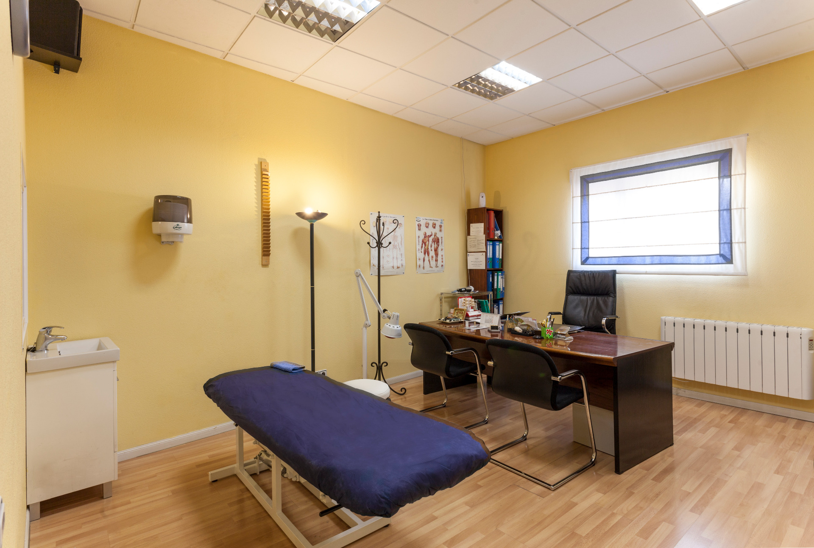
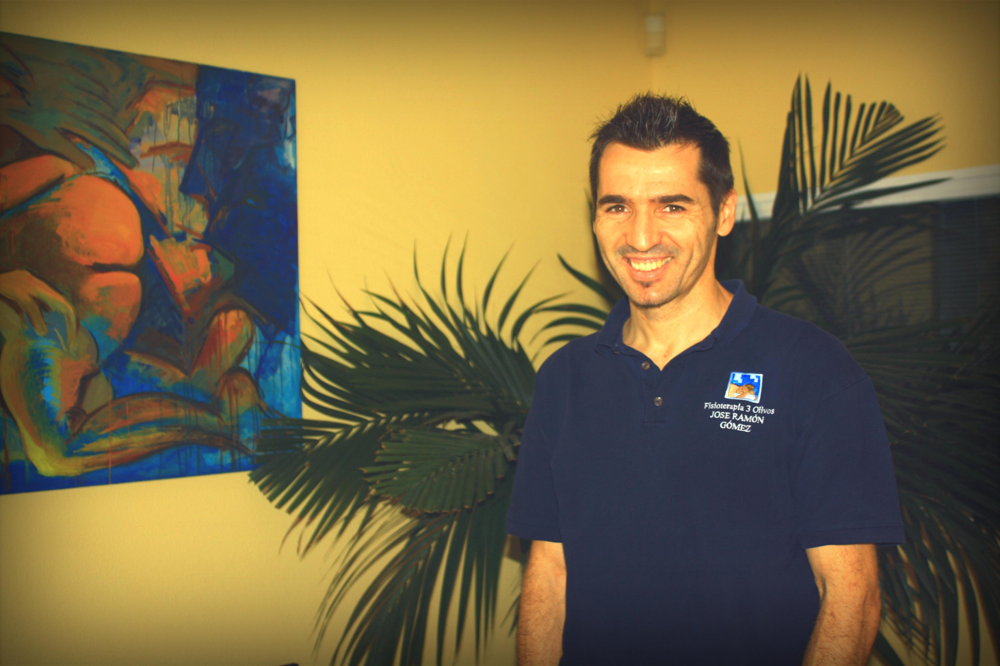
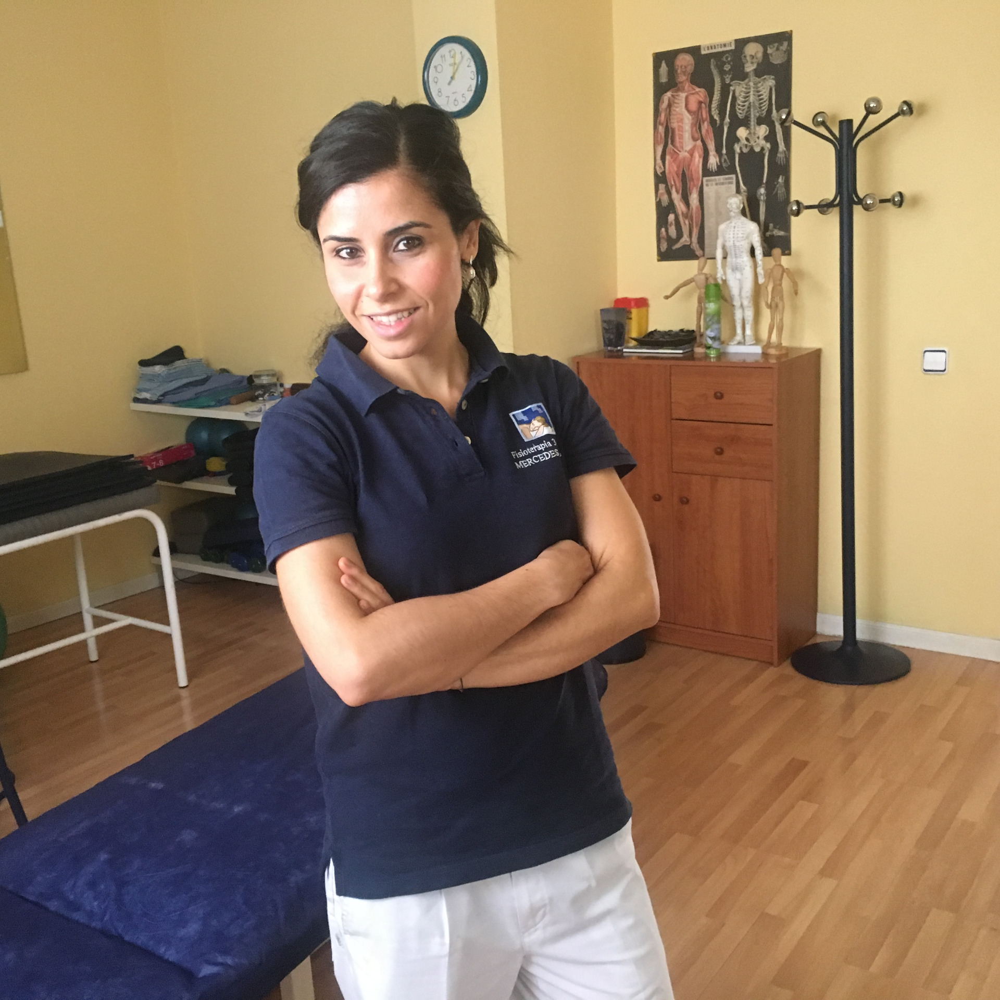
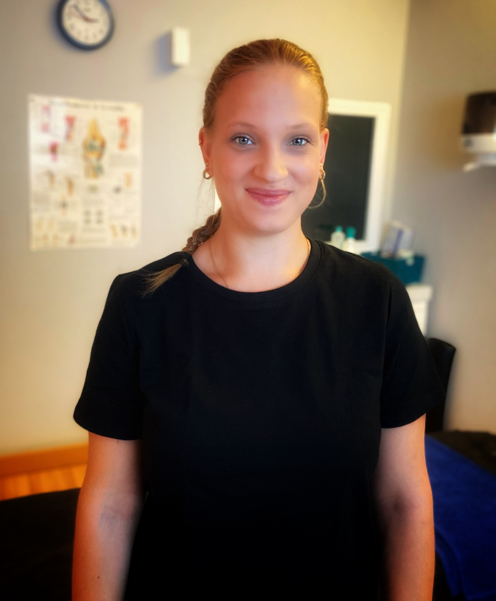

Fisioterapia y rehabilitación
Tratamiento manual personalizado para dolor de espalda y cuello, masaje descontracturante y recuperación funcional tras cirugías o lesiones.
Saber másFisioterapia en Tres Olivos, Madrid · desde 1999
Tratamiento manual personalizado, dolor de espalda, recuperación tras cirugía, lesiones deportivas, Pilates e INDIBA® en la zona de Tres Olivos, Fuencarral, Montecarmelo y Las Tablas.

Por qué somos diferentes
“¿Esto funciona de verdad?” Sí. Y lo notarás porque entendemos tu cuerpo antes de tratarlo.
Desde 1999, la clínica de Fisioterapia Tres Olivos acompaña a pacientes de la zona norte de Madrid con una base muy clara: tratamiento manual y personalizado, siempre con el mismo profesional durante todo el proceso.
Incorporamos técnicas y aparatología que realmente aportan, como INDIBA®, punción seca, electroterapia o ultrasonido, además de trabajo preventivo con Pilates e hipopresivos.
— El equipo de Fisioterapia 3 Olivos
Tratamientos
Empezamos por un diagnóstico preciso: la ecografía es nuestra herramienta clave para ver la lesión en consulta y diseñar el tratamiento exacto que necesitas.
Tratamiento manual personalizado para dolor de espalda y cuello, masaje descontracturante y recuperación funcional tras cirugías o lesiones.
Saber másTe acompañamos desde el alta hasta recuperar movilidad, confianza y función, con seguimiento cercano y criterios claros en cada fase.
Saber másTratamos la lesión, corregimos la causa y cuidamos la vuelta al deporte con seguridad, especialmente en aparato locomotor y espalda.
Saber másAbordaje específico de la articulación temporomandibular, dolor mandibular y cefaleas tensionales desde la fisioterapia especializada.
Saber másTratamiento de incontinencia, dolor, prolapsos, cicatriz de cesárea o episiotomía y recuperación funcional del abdomen y suelo pélvico.
Saber másClases con supervisión clínica en nuestro Springboard de pared y circuitos de fuerza adaptados: trabajo postural, preventivo y de recuperación funcional.
Saber másRadiofrecuencia regenerativa no invasiva e hipopresivos para mejorar dolor, tono abdominal y recuperación postparto.
Saber másTecnología al servicio del trato
La base sigue siendo manual y personalizada. La tecnología entra cuando mejora el resultado, no como sustituto de la valoración clínica.

Sobre nosotros
Somos una clínica de referencia en Tres Olivos desde 1999, especializada en aparato locomotor, espalda, lesiones deportivas, suelo pélvico y recuperación funcional.
Nuestro enfoque combina experiencia, especialización y continuidad. Te valoramos, te tratamos y hacemos seguimiento con el criterio de quien conoce tu caso de verdad.


Cómo trabajamos
Una primera valoración sin prisa: tu historia, tus dolores, tus objetivos. Exploramos a fondo antes de proponer nada.
Revisamos tu caso, tus síntomas y tus informes previos, y cuando ayuda al diagnóstico exploramos la zona con ecografía. Entender bien el problema es la mitad del tratamiento.
Diseñamos un tratamiento a tu medida, con los objetivos claros y los tiempos adaptados a tu caso.
Trabajo manual como base, con INDIBA®, punción seca o lo que tu caso necesite para acelerar la recuperación.
Te damos pautas y seguimiento para que la lesión no vuelva. El objetivo es que dejes de necesitarnos.
Opiniones
Llegué tras una operación de rodilla sin poder doblarla. El trato fue excelente y noté el cambio desde la segunda sesión.
Me dudaba si la fisio servía para mi lumbalgia crónica. Aquí entendieron el origen y por fin duermo del tirón.
Como corredor he pasado por varias clínicas. Es la primera vez que me explican qué tengo y por qué. Volví a competir.
Preguntas frecuentes
¿No ves la tuya? Escríbenos por WhatsApp y te respondemos.
Depende del tratamiento y del momento en que estés, pero al pedir cita te indicamos exactamente cómo será tu primera valoración y la duración prevista.
Si tienes pruebas (resonancias, informes del cirujano, etc.), tráelas: nos ayudan a afinar el diagnóstico. Si no, no hay problema, hacemos nuestra propia valoración.
Es una de nuestras especialidades. Diseñamos el plan según la fase postoperatoria en la que estés y coordinamos los tiempos de tu recuperación.
Si tienes dudas sobre seguros o reembolsos, consúltanos al llamarnos y te orientamos según tu caso antes de venir.
Estamos en Plaza de los Tres Olivos, local, 28034 Madrid. La clínica tiene fácil acceso y aparcamiento, con Metro Tres Olivos y autobuses EMT 66 y 137 cerca.
Contacto